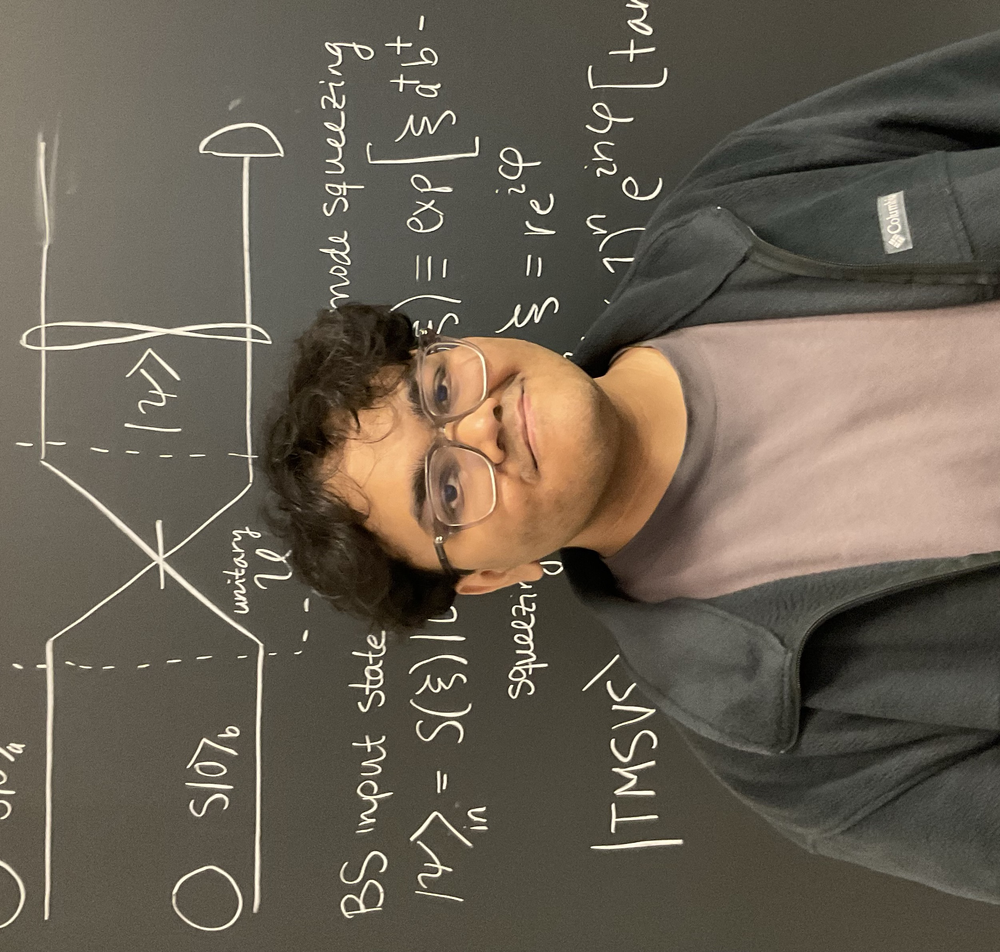

About Me
Hello! Bonjour! नमस्ते! કેમ ચો? My name is Dharmik Patel. I am a current MSc (Physics) student at the University of Ottawa. I was previously at the University of Toronto, from where I graduated with an Honours Bachelor of Science in Mathematics and Physics in 2024. I was born in India and had stints in China and Thailand before I moved back home to Ahmedabad. I work in theoretical quantum optics and information, with a focus on photonic quantum computing. I did my undergraduate work in this field under the supervision of Prof. John Sipe and Dr. Colin Vendromin, and I am currently working under the supervision of Prof. Khabat Heshami at uOttawa.
📄 You can view my full CV here: Dharmik's CV
CV
Education
Add your educational background here.
Experience
List your work experience, internships, or relevant positions.
Skills
Highlight your technical and professional skills.
Publications
List any publications, papers, or research you've contributed to.
Research
My research interests span across quantum physics, from foundations to information processing. I am especially interested in using ideas from mathematics to explore new perspectives in quantum optics and information. In previous years, I have worked on projects involving analogue black hole simulation, analysing spectroscopy data to characterise ultra-faint dwarf galaxies, and tracing the development of the cosmic censorship conjectures.
Here are some things I am currently working on:
- Generating discretely symmetric Wigner-negative non-Gaussian states using Gaussian resources (with J.E. Sipe and Colin Vendromin).
- Determining the global phase for unitary operators associated with purely quadratic Hamiltonians (with J.E. Sipe and Colin Vendromin).
- Simulating nonlinear SFWM Hamiltonians of $\chi^{(3)}$ processes (with J.E. Sipe and Colin Vendromin).